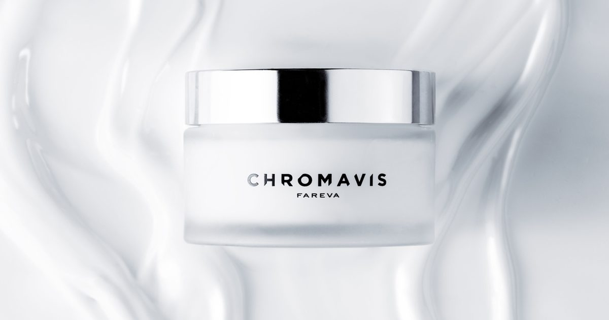

Fareva во Франции и Chromavis в Италии объединяют усилия в области высококачественного ухода за кожей
Fareva и Chromavis объединяют свой научный, рецептурный и творческий опыт для разработки новых концепций ухода за кожей, объединяя передовую науку о коже и итальянское творчество.
Сотрудничество в рамках группы Fareva направлено на использование опыта Chromavis в области дизайна продукции, инновационных текстур и сенсорного опыта с возможностями разработки рецептур и средств по уходу за кожей Fareva во Франции.
Партнерство направлено на изучение нового подхода